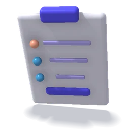
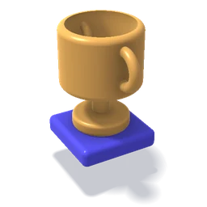

Baseline

We review current pages, tracking, and traffic to establish what 'working' looks like before changing anything.
You see what 'working' looks like before anything changes.For businesses and agencies running traffic continuously. We watch how pages perform, keep an improvement backlog current, and ship copy, design, and build changes — plus new campaign pages as the offer evolves.
No ObligationResponse within 1 day

Pages quietly degrade between campaigns. Launch is the best a page ever looks. Then offers change, campaigns rotate, and nobody owns the page — so conversion work stalls until the next expensive rebuild. An ongoing engagement keeps someone accountable for performance in between.
Four outcomes every Ongoing Conversion Support engagement is built to deliver, month after month.
Pages that keep improving instead of aging between campaigns.
Reviewed on a regular cadenceA prioritized improvement backlog that stays current.
Highest-impact work firstNew campaign and location pages shipped as the offer evolves.
Campaign and location pagesDirect access to Riz for strategy calls and prioritization.
Strategy calls and prioritizationFive things every Ongoing Conversion Support engagement covers, set against the other ways teams usually keep pages improving.
| What's included |  PageDriven | Design agency | Freelancer | AI alone |
|---|---|---|---|---|
| Regular performance reviewsSignals checked on a set cadence | Included | Sometimes | Sometimes | Not usually |
| A backlog kept currentPrioritized, not ad hoc | Included | Sometimes | Not usually | Not usually |
| Changes shipped on a cadenceCopy, design and build | Included | Included | Sometimes | Not usually |
| New campaign and location pagesAs the offer evolves | Included | Included | Included | Sometimes |
| Direct founder accessStrategy calls with Riz | Included | Sometimes | Not usually | Not usually |
We don't promise split testing as a default. Reliable experiments need sufficient traffic and trustworthy tracking; below that threshold, test results mislead more than they inform. Where your numbers support experimentation, we'll recommend it. Where they don't, we focus on direct, evidence-based improvements instead.
Here's how each cycle runs, and what you'll see from us every time it does.

We review current pages, tracking, and traffic to establish what 'working' looks like before changing anything.
You see what 'working' looks like before anything changes.
Findings and ideas go into a ranked backlog, so effort always goes to the highest-impact work first.
You see the ranked backlog and why each item is on it.
Copy, design, and build changes ship on a predictable cadence, with quality review before anything goes live.
Changes go live on a predictable cadence, reviewed first.
We watch performance signals, report what changed and what it did, and re-prioritize the backlog.
You get a short report on what changed and what it did.“Working with Rizvi has been a dream come true for our marketing department. Before working w/ him we were utilizing different contractors for site design, development, and CRO. Rizvi is a one-stop shop and consistently executes at a high level. To add, and this is really appreciated in a fast moving marketing department- his communication is excellent so we always know where things stand day to day. Planning to use him ongoing for a long time to come.”
“If you're looking for somebody who gets Sh*t done, doesn't need hand-holding, and speaks and writes well. Riz is your man! He's been working alongside us for over 6 months, and it's been a pleasure. Knows his craft, is well-versed, and communicates clearly. If you need any sort of Web Dev/Design services, shoot him a message.”
Ongoing CRO and UX optimization that took average homepage visits from 3 to 18 seconds.
Learn more →Analyzed visitor behavior across six service pages to find which content earned attention and where UX refinements could lift lead capture.
Learn more →Rebuilt a spinal decompression funnel around patient concerns, stronger proof, one consistent offer and a clearer form journey.
Learn more →A phased Elementor redesign that turned an aging, SEO-driven website into a polished, conversion-focused experience.
Learn more →An image-led Webflow redesign that balances visual storytelling with mobile usability, performance and search visibility.
Learn more →A custom WordPress theme combining a distinctive brand with Moneris payments and a tailored course-enrollment checkout.
Learn more →Redesigned the page and copy around subscription and discount offers so the saving shows at the point of choice.
Learn more →Turned a colour-browsing page into a free quote request funnel for high-intent organic visitors.
Learn more →
Campaign landing pages planned, written, designed, and built around one clear action — on the platform you already use.
Learn more →Full websites structured around how buyers actually decide — built to carry both paid and organic traffic.
Learn more →
A comprehensive, paid review of what is costing you conversions — with prioritized fixes, not a generic scorecard.
Learn more →Still unsure? Ask in the chat, or email Riz directly.
hello@pagedriven.comWhere it makes sense. Experimentation depends on sufficient traffic and reliable tracking — without enough volume, test results aren't readable and can be misleading. We'll tell you honestly whether your traffic supports testing, and prioritize direct improvements when it doesn't.
A reviewed performance readout, a re-prioritized backlog, and shipped changes — the mix of copy, design, and new pages depends on where the biggest gains sit that month.
Yes. Agencies use this as ongoing production capacity with conversion thinking attached — landing pages, location pages, and UX improvements delivered under your brand.
We scope ongoing support around what your traffic and page count actually justify. That conversation starts with the free page review, not a contract.
Riz stays on strategy and quality review, supported by the specialist team that ships copy, design, and build work.
Share your page and goal. We'll reply with a clear recommendation and scope.
No ObligationResponse within 1 day